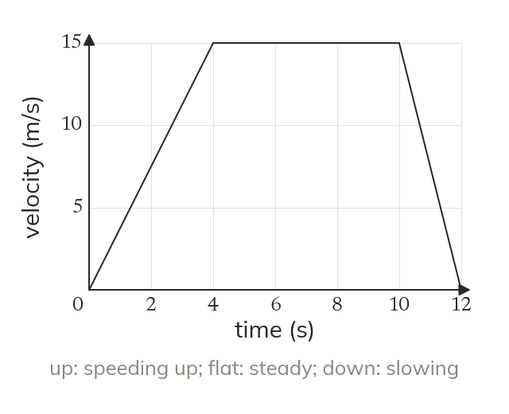
Velocity up the side
A velocity-time graph plots speed against time, not distance. So a horizontal line means moving at a constant speed, not standing still.
Sprinters, lift engineers and speed cameras all care about how quickly a speed changes. A velocity-time graph shows it, and it reads differently from a distance-time graph.
Work down the page at your own pace. Write every answer in your book first, then click to check it.
Read each card, then follow the worked examples one step at a time.

A velocity-time graph plots speed against time, not distance. So a horizontal line means moving at a constant speed, not standing still.
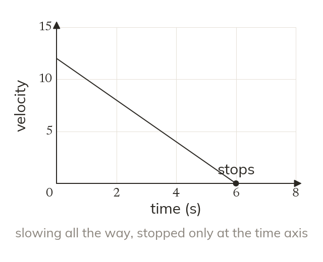
A line sloping down means the object is slowing down while still moving forward. It stops only when the line reaches the time axis.
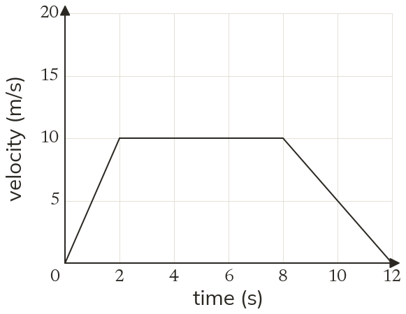
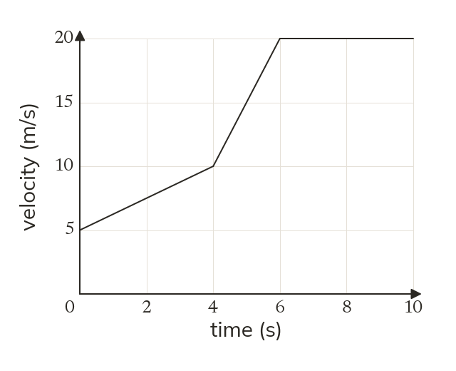
Pick an answer. If it's wrong, the feedback tells you which mistake it was.
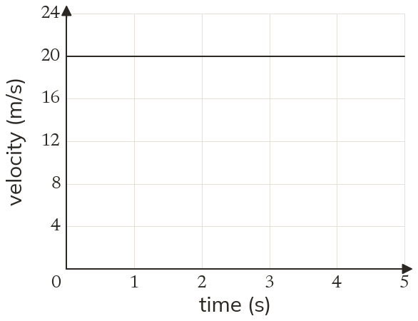
Printable worksheet — the questions with room to work.
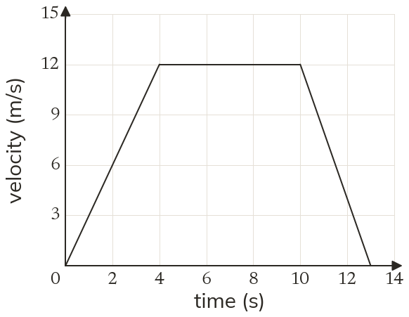
Read each card, then follow the worked examples one step at a time.
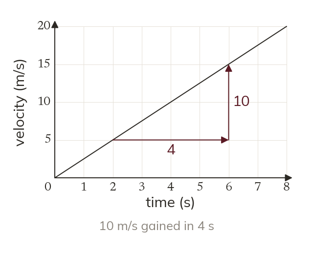
The gradient of a velocity-time graph is the acceleration. Acceleration = change in velocity ÷ change in time, in ms².
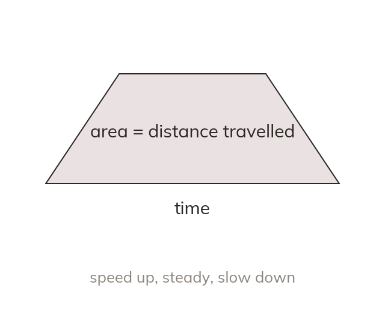
A negative gradient is a deceleration. The area under a velocity-time graph is the distance travelled.
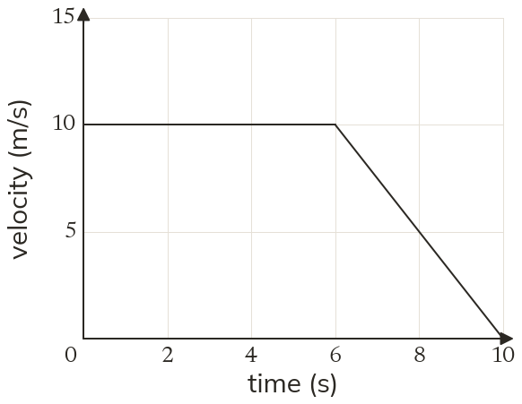
Pick an answer. If it's wrong, the feedback tells you which mistake it was.
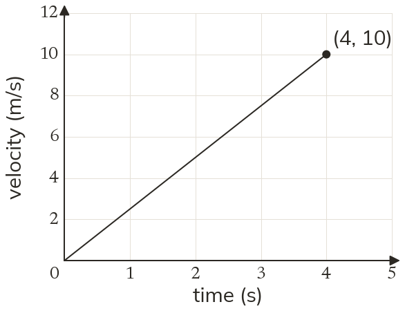
Printable worksheet — the questions with room to work.
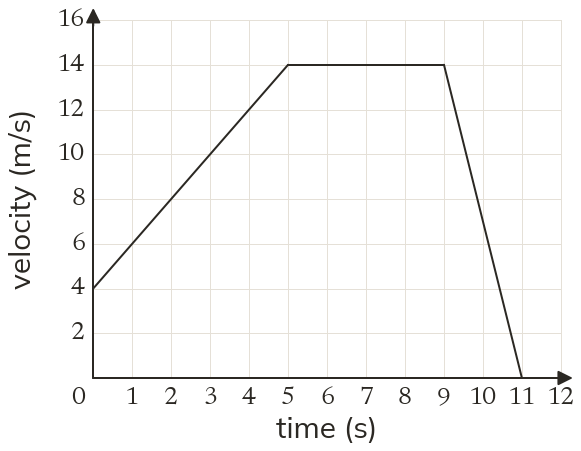
Finished? Next lesson: 8.13.5 Conversion and Time-Series Graphs.
Log in, then search for a code to practise that skill.
Videos, worksheets and more on each part of this lesson.